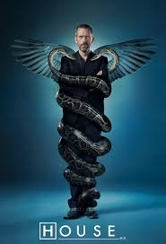

Dr. House
Resenha
Uma série incrível com um protagonista que tem personalidade marcante e dicotômica. Por um lado, é um
médico apático, sarcástico, viciado e amargurado que trata pacientes como "ratos de laboratório",
mas que, no fundo, tem empatia pelas pessoas que convive (mesmo que de modo inconsciente). Prova
disso é quando ele se sente culpado pelas mortes de alguns personagens (como Kutner e a "sacana") e
começa a ter alucinações que distorcem a realidade, isto é, a busca pela tentativa de ser apenas
racional quando, na prática, não consegue se destoar completamente de seu apego emocional.
A trama gira em torno de diversos casos complexos de diagnósticos, e é somente por isso que a
diretora do hospital mantém House com seu emprego: a genialidade desse médico, juntamente à sua
equipe com integrantes de distintas áreas da medicina, torna-o capaz de persistir no cargo de médico
mesmo sendo viciado em remédios para dor e com MUITOS processos.
A ideia de uma dupla inspirada em Sherlock Holmes e John Watson (Gregory House e James Wilson) forma
uma interação muito cômica. É muito mais cativante quando os personagens saem do perfil de
"certinhos" e apresentam muito mais profundidade.
Nota
8,5/10